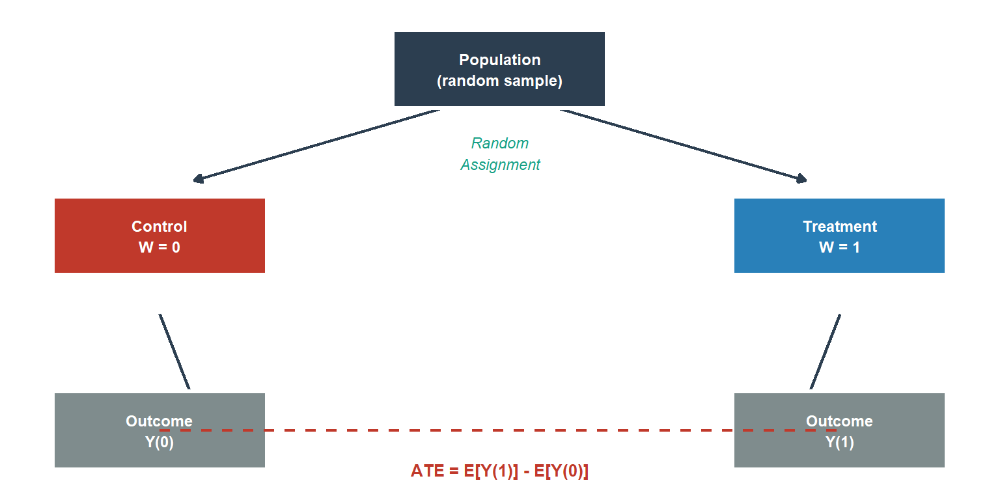
From RCTs to A/B Tests: A Practitioner’s Guide to Trustworthy Experimentation
A/B testing
causal inference
experimentation
R
Bayesian statistics
econometrics
The RCT is the gold standard of causal inference. The A/B test is its industrial implementation, and it is harder to do correctly than most organisations admit. A complete practitioner guide covering design, diagnostics, power, sequential testing, fat tails, interference, and Bayesian decision theory. With full R implementation.
The Same Coin, Two Mints
The previous post in this series introduced the counterfactual as the foundation of causal inference: every causal claim is a statement about an outcome that did not happen. We also introduced the central identification challenge, we cannot observe both potential outcomes Y_i(1) and Y_i(0) for the same unit at the same time.
The randomised controlled trial (RCT) is the oldest and cleanest solution to that challenge. The A/B test is the same solution, running at internet speed. Understanding why they are the same thing, and where they diverge in practice, is the prerequisite for running experiments that actually produce reliable causal estimates.
This post builds the full pipeline: from the theoretical foundations of RCTs, through experiment design and instrumentation, to the common failure modes and the Bayesian decision framework that should replace the p < 0.05 reflex.
Part I: The Theoretical Architecture
The Randomised Controlled Trial
The logic of the RCT is simple and powerful. If treatment assignment W_i \in \{0, 1\} is allocated independently of every characteristic of the unit, observed and unobserved, then the two groups are identical in expectation on everything except the treatment itself. Any difference in average outcomes is therefore attributable to the treatment.
Formally, randomisation achieves:
(Y_i(0), Y_i(1)) \perp W_i
which immediately implies:
\mathbb{E}[Y_i(1) - Y_i(0)] = \mathbb{E}[Y_i \mid W_i = 1] - \mathbb{E}[Y_i \mid W_i = 0]
The observable difference in means is an unbiased estimator of the Average Treatment Effect (ATE). No regression, no model, no functional form assumption is needed for identification and unbiased estimation. Randomisation does all the work for the ATE. Regression and other modelling approaches can improve precision, and we will use them for variance reduction and for non-continuous outcomes, but they are not required for the causal claim itself. Throughout this post, “difference-in-means estimator”, “ATE estimator”, and “t-test estimate” all refer to this same object in the RCT context; the labels vary by context but the estimand is the same.
This is the identification strategy that every A/B test inherits from the RCT. The technology changes, a drug trial enrolling 800 patients over two years becomes a product experiment assigning millions of users in days, but the underlying logic is identical.
SUTVA: The Bridge Between Statistics and Causality
Before the sample difference in means can be interpreted as the ATE, an assumption must hold that sits beneath the model: the Stable Unit Treatment Value Assumption (SUTVA).
SUTVA has two components. First, no interference: unit i’s potential outcomes depend only on W_i, not on the assignment vector of other units. We write Y_i(W_i), not Y_i(\mathbf{W}). Second, no hidden versions of treatment: there is a single, well-defined version of treatment.
In many drug trials, SUTVA is plausible. When patients are independent and treatment is administered individually, one patient’s health outcome typically does not depend on another’s treatment assignment. This assumption fails, however, in infectious disease trials where treatment of one patient reduces transmission to others, or in settings with shared medical resources. In a two-sided marketplace, SUTVA is routinely violated by construction. A treated Uber driver repositioning to a high-demand zone changes the supply available to all riders in that zone, including those interacting with control-group drivers. The control group’s “untreated” outcomes are contaminated by the treatment.
The consequences of silently violating SUTVA are severe: the difference-in-means estimator no longer recovers the ATE, and the bias can be in either direction. SUTVA is not a technicality. It is the bridge between the statistical model and the causal claim. We return to SUTVA violations in Part IV.
A/B Testing as the Industrial RCT
The operational differences between a clinical RCT and an online A/B test are significant. The logical structure is not.
| Dimension | Clinical RCT | Online A/B Test |
|---|---|---|
| Sample acquisition cost | High (recruitment, consent) | Near-zero (organic traffic) |
| Cycle time | Months to years | Days to weeks |
| Outcome measurement | Clinical endpoints, follow-up | Logged telemetry, real-time |
| Attrition mechanism | Patient dropout | Cookie churn, multi-device users |
| Interference | Rare (independent patients) | Common (networked platforms) |
| Regulatory framework | ICH E9, CONSORT | Internal policies only |
The absence of external regulation in the online context is not a simplification. It is an invitation to cut the statistical corners that clinical researchers cannot cut. Decades of clinical infrastructure, pre-registration, alpha-spending boundaries, data monitoring committees, were built because researchers discovered that without structural discipline, the scientific record degrades. Technology companies are rediscovering the same lesson, at scale, in production (Kohavi, Tang, and Xu, 2020).
Part II: Running an A/B Test Step by Step
A correctly run A/B test has six distinct phases. Most organisations skip or abbreviate at least three of them.
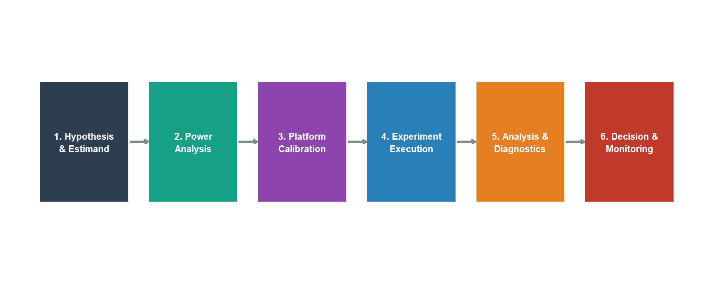
Phase 1: Hypothesis and Estimand
The most expensive mistake in experimentation is measuring the wrong thing. Before running a line of code, three decisions must be nailed down.
The estimand: what causal quantity do you want to recover? The ATE across all users? The ATT for active users? The short-run effect on activation, or the long-run effect on retention? These are different objects. Confusing them produces estimates that are internally valid but externally misleading.
The primary metric: one metric, specified before the experiment runs. Secondary metrics are diagnostic. The primary metric is the decision criterion. Pre-registering it prevents the post-hoc selection of whichever metric happened to look good.
The unit of randomisation and analysis: the level at which assignment is made (typically the user) and the level at which the metric is computed (pageviews, sessions, or user-days). These must be consistent. We return to this in Phase 3.
TipPre-registration discipline
Write a one-page experiment brief before any code is written: hypothesis, estimand, primary metric, randomisation unit, sample size target, and planned duration. Sign-off from a data scientist and the product owner. This takes 30 minutes and eliminates the most common post-hoc rationalisation errors.
It is worth noting that most A/B testing failures are estimand errors, not statistical errors: the wrong quantity was specified before any data were collected. A statistically impeccable analysis of the wrong estimand is still the wrong answer.
Phase 2: Power Analysis
Statistical power is the probability of detecting a true effect. Low power does not merely increase the chance of missing real effects, it guarantees that the effects you do detect are systematically overstated. This is Gelman and Carlin’s (2014) Type M error (magnitude exaggeration), and it is the mechanism that fills product roadmaps with inflated expectations.
For a binary metric with base rate p_0 and minimum detectable effect (MDE) \delta, defining p_1 = p_0 + \delta as the treatment-group rate, the required sample size per arm at significance level \alpha and power 1-\beta is:
n = \frac{(z_{\alpha/2} + z_\beta)^2 \cdot \left[p_0(1-p_0) + p_1(1-p_1)\right]}{\delta^2}
A simpler conservative formula uses the null variance 2p_0(1-p_0) in place of p_0(1-p_0) + p_1(1-p_1), which overstates the required sample size when p_1 is farther from 0.5 than p_0. The code implementation below uses the two-variance formula, which is the standard recommendation, and maps directly to the expression above. In both cases, the 1/\delta^2 relationship is the practical punch: halving the MDE quadruples the required sample size.
Code
# FIX (A): sigma2 is the sum of arm variances, matching the formula directly.
# The previous version divided by 2 then multiplied by 2, which was
# mathematically equivalent but needlessly opaque.
power_n <- function(p0, mde, alpha = 0.05, power = 0.80) {
p1 <- p0 + mde
sigma2 <- p0*(1-p0) + p1*(1-p1) # sum of arm variances
z_a <- qnorm(1 - alpha / 2)
z_b <- qnorm(power)
ceiling(((z_a + z_b)^2 * sigma2) / mde^2)
}
mde_seq <- seq(0.002, 0.05, by = 0.001)
df_pw <- data.frame(mde = mde_seq,
n = vapply(mde_seq, power_n, numeric(1), p0 = 0.10))
ggplot(df_pw, aes(x = mde * 100, y = n)) +
geom_line(colour = "#16a085", linewidth = 1.3) +
geom_vline(xintercept = 1, linetype = "dashed",
colour = "#c0392b", linewidth = 0.9) +
annotate("text", x = 1.08, y = max(df_pw$n) * 0.75,
label = "1 pp MDE", colour = "#c0392b",
size = 3.4, hjust = 0) +
scale_y_continuous(labels = scales::comma_format()) +
scale_x_continuous(labels = function(x) paste0(x, " pp")) +
labs(
x = "Minimum Detectable Effect (absolute pp lift)",
y = "Sample size per arm",
title = "Power Analysis: Sample Size vs MDE",
subtitle = "Base rate = 10% | α = 0.05 | Power = 80%"
) +
theme_minimal(base_size = 12) +
theme(plot.title = element_text(face = "bold"))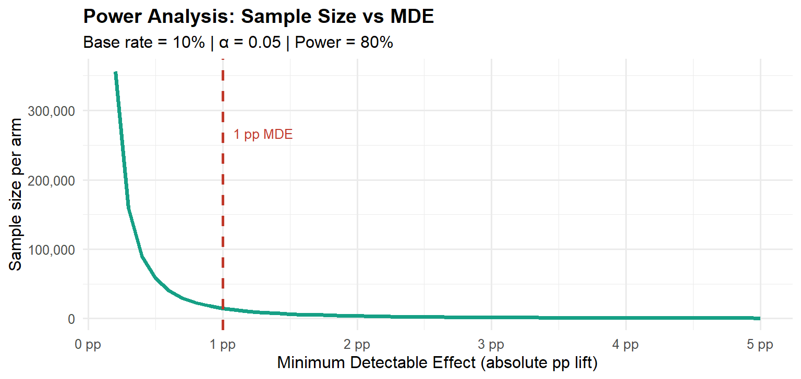
Type M error and the winner’s curse. When we select features for launch based solely on p < 0.05, we select precisely the experiments where the observed effect was unusually large relative to the true effect. Gelman and Carlin formalise the expected exaggeration ratio conditional on statistical significance. The figures below are simulation-based approximations under Gaussian noise, consistent with Gelman and Carlin (2014): at 50% power, detected effects are on average roughly 40% larger than the truth; at 80% power, the exaggeration falls to around 13%; at 95% power, approximately 3%.
Code
compute_type_m <- function(pwr, alpha = 0.05, n_sims = 200000) {
z_crit <- qnorm(1 - alpha / 2)
f <- function(snr) pnorm(snr - z_crit) + pnorm(-snr - z_crit) - pwr
snr <- uniroot(f, interval = c(0.001, 20))$root
z_d <- rnorm(n_sims, mean = snr, sd = 1)
sig <- abs(z_d) > z_crit
if (sum(sig) < 10) return(NA_real_)
mean(abs(z_d[sig])) / snr
}
set.seed(999)
pwrs <- seq(0.40, 0.97, by = 0.03)
tm_vec <- vapply(pwrs, compute_type_m, numeric(1))
df_tm <- data.frame(power = pwrs, exagg = tm_vec) |>
dplyr::filter(!is.na(exagg))
ggplot(df_tm, aes(x = power, y = (exagg - 1) * 100)) +
geom_line(colour = "#8e44ad", linewidth = 1.3) +
geom_point(colour = "#8e44ad", size = 2.2) +
geom_hline(yintercept = 10, linetype = "dashed",
colour = "#c0392b", linewidth = 0.9) +
annotate("text", x = 0.44, y = 11.5,
label = "10% threshold", colour = "#c0392b", size = 3.2) +
scale_x_continuous(labels = scales::percent_format(accuracy = 1),
breaks = seq(0.4, 1, 0.1)) +
scale_y_continuous(labels = function(x) paste0(x, "%")) +
labs(
x = "Statistical power",
y = "Expected exaggeration above true effect",
title = "Type M Error: The Hidden Cost of Low Power",
subtitle = "Simulation-based approximation | Conditional on statistical significance | α = 0.05"
) +
theme_minimal(base_size = 12) +
theme(plot.title = element_text(face = "bold"))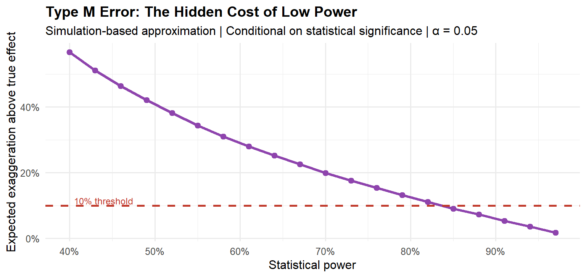
The R Toolkit for Power Analysis and A/B Testing
Before moving to the next phase, it is worth naming the packages that make each step implementable. This is the stack that covers the full pipeline described in this post.
Power analysis and test selection. The pwr package provides standard power calculations for two-proportion z-tests (pwr.2p.test()), two-sample t-tests (pwr.t.test()), and chi-squared tests (pwr.chisq.test()). For a conversion rate experiment, pwr.2p.test(h = ES.h(p1, p2), sig.level = 0.05, power = 0.80) returns the required sample size per arm directly, where ES.h() computes Cohen’s h effect size from two proportions. The explore package provides a higher-level interface for binary A/B test power analysis that product teams can use without deep statistical knowledge.
Tidy inference. The infer package provides a tidyverse-consistent API for hypothesis testing and simulation-based inference. Its specify(), hypothesize(), generate(), calculate() pipeline makes permutation tests and bootstrap confidence intervals readable and reproducible.
Variance reduction. The lm() function with CUPED covariates is sufficient for basic variance reduction. For clustered standard errors required in switchback experiments, feols() from the fixest package is the correct tool.
Bayesian A/B testing. The bayesAB package implements Beta-Binomial and Normal-Normal conjugate updates for binary and continuous metrics, returning posterior probabilities of superiority and credible intervals directly. For a more flexible Bayesian workflow, brms with a Bernoulli likelihood provides a full posterior over conversion rates with arbitrary priors.
Sequential testing. The gsDesign package implements O’Brien-Fleming and Pocock alpha-spending functions for group sequential designs. For continuous monitoring, the ldbounds package computes the spending boundaries. The bayesAB approach sidesteps this from a Bayesian perspective: the posterior is a coherent representation of uncertainty at any sample size, so checking it repeatedly does not invalidate posterior probability statements. However, if the decision rule must control the frequentist Type I error rate, Bayesian optional stopping does not preserve that guarantee without further calibration. We return to this important distinction in Part V.
Which Statistical Test to Use
The choice of test is not arbitrary, it follows from the nature of your data and sample characteristics. The decision tree below covers the most common cases (retrieved from R-Bloggers guide to A/B testing for marketing analytics).
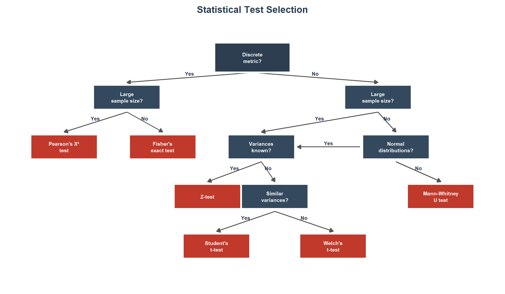
The four most common situations in practice are:
Discrete metric (categorical data: conversion, purchase, click). Use Pearson’s chi-squared test (chisq.test()) for large samples where the expected frequency in every cell is \geq 5. For 2 \times 2 tables with small or borderline counts, apply Yates’s continuity correction (chisq.test(correct = TRUE), the default) to reduce Type I error inflation. For small samples or sparse tables (any expected count < 5), use Fisher’s exact test (fisher.test()), which computes the exact p-value under the hypergeometric distribution without relying on asymptotic approximations. Fisher’s exact test is the conservative default for binary outcomes with small samples, statistically robust to exact sample size and cell count conditions, but potentially lower in power than the chi-squared test when expected cell counts are comfortably above 5. For moderately large tables it is computationally feasible and remains the safest choice whenever cell count assumptions are not clearly met.
Continuous metric with large samples (n \gtrsim 1000 per arm: revenue per user, ARPU, session duration). Use the Z-test (or, equivalently, t.test() with Welch’s correction) when sample sizes are large enough for the Central Limit Theorem to ensure the sampling distribution of the mean is approximately normal, regardless of the underlying distribution. Truly known population variances are rare in practice, this scenario is essentially a large-sample case. For metrics like revenue with extreme skew, verify that the sample mean has converged (e.g., via bootstrap CIs) before trusting the test.
Continuous metric with unknown variances. Check distributional assumptions first (Q-Q plots, Shapiro-Wilk). Because the treatment may shift the variance alongside the mean, Welch’s t-test (t.test(var.equal = FALSE), the R default) should be the standard choice. It does not assume equal variances, controls Type I error under heteroscedasticity, and has power comparable to Student’s test when variances are equal. Testing for variance homogeneity (Levene’s test, car::leveneTest()) before choosing between Student’s and Welch’s is unnecessary in practice: a non-significant Levene’s test does not prove equal variances (low power), and Welch’s performs well regardless. The sole exception is when sample sizes are very small (under 15 per arm) and severely unequal, where Welch’s can be slightly anti-conservative, in that regime, inspect the data and consider a non-parametric alternative.
- If data are approximately normal, use Welch’s t-test as the default. Student’s t-test (
t.test(var.equal = TRUE)) should be used only when there is a strong prior reason to believe variances are equal, which is rarely the case in A/B testing. - If data are non-normal or sample sizes are small, use the Mann-Whitney U test (
wilcox.test(exact = FALSE)), which tests the null hypothesis H_0: P(X > Y) = 0.5 (stochastic equality). Under the additional assumption that the two distributions share the same shape and differ only by a location shift, rejection can be interpreted as evidence of a median difference. Without that assumption, rejection indicates a difference in the probabilistic ordering of the two distributions, which is a broader form of stochastic dominance, not a median shift. This distinction matters in practice: never interpret a significant Mann-Whitney result as evidence of a median difference unless the equal-shape assumption has been explicitly verified.
Count metric (page views per user, clicks per session). Do not use a t-test on raw counts. Counts are non-negative, right-skewed, and typically overdispersed (variance > mean). The appropriate models are Poisson regression (glm(family = poisson)) for equidispersed counts, or negative binomial regression (MASS::glm.nb()) when overdispersion is present. Use the treatment assignment as the sole covariate, include an offset for exposure time if relevant (e.g., offset(log(session_duration))), and cluster standard errors at the user level (e.g., via sandwich::vcovCL() or lmtest::coeftest()) to account for within-user correlation. For data with excess zeros (e.g., most users do not click), consider zero-inflated models (pscl::zeroinfl()) or quasi-Poisson regression (glm(family = quasipoisson)) as alternatives.
TipAlways check before you test
Before committing to any parametric test, plot the per-user distributions for both arms. A Q-Q plot (qqnorm()) and a histogram with kernel density overlay takes two minutes and can save you from reporting a test result whose p-value is meaningless because the distributional assumption was badly violated.
Phase 3: Platform Calibration: The A/A Test
An A/A test exposes both arms to the identical experience. Because there is no treatment, the distribution of p-values across thousands of A/A tests must be uniform: approximately 5% should yield p < 0.05, 1% should yield p < 0.01, and so on.
This is a calibration requirement, not a nice-to-have. A platform that fails A/A tests cannot produce trustworthy A/B results. Kohavi et al. (2020) document that at Microsoft’s Experimentation Platform (EXP), approximately 8% of experiments exhibited Sample Ratio Mismatch (SRM), a statistically significant deviation from the intended 50/50 split. Any SRM invalidates the experiment: if the arms were not constructed as intended, the difference-in-means estimator is no longer unbiased.
Code
set.seed(42)
n_aa <- 10000L
n_arm <- 1000L
p0_aa <- 0.10
pvals_aa <- vapply(seq_len(n_aa), function(i) {
ctrl <- rbinom(n_arm, 1, p0_aa)
trt <- rbinom(n_arm, 1, p0_aa)
prop.test(c(sum(ctrl), sum(trt)),
c(n_arm, n_arm), correct = FALSE)$p.value
}, numeric(1))
ks_aa <- ks.test(pvals_aa, "punif")Warning in ks.test.default(pvals_aa, "punif"): ties should not be present for
the one-sample Kolmogorov-Smirnov testCode
ggplot(data.frame(p = pvals_aa), aes(x = p)) +
geom_histogram(aes(y = after_stat(density)),
binwidth = 0.05, boundary = 0,
fill = "#3d85c8", colour = "white", alpha = 0.85) +
geom_hline(yintercept = 1, linetype = "dashed",
colour = "#c0392b", linewidth = 1.0) +
annotate("text", x = 0.55, y = 1.30,
label = sprintf("KS test vs. Uniform\np = %.3f", ks_aa$p.value),
colour = "#c0392b", size = 3.4) +
scale_x_continuous(breaks = seq(0, 1, 0.1)) +
scale_y_continuous(limits = c(0, 1.6)) +
labs(
x = expression(italic(p)*"-value"),
y = "Density",
title = "A/A Test: p-value Calibration Check",
subtitle = sprintf("%s simulated A/A tests | %s observations per arm",
format(n_aa, big.mark = ","),
format(n_arm, big.mark = ","))
) +
theme_minimal(base_size = 12) +
theme(plot.title = element_text(face = "bold"))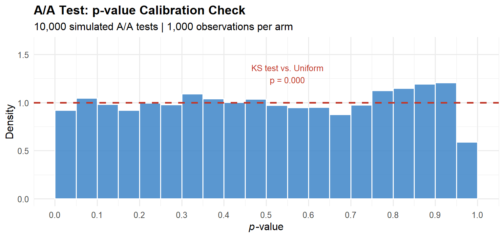
Three canonical platform failure modes.
Randomisation unit / analysis unit mismatch. Randomise by user (correct), then compute the metric at the pageview level (incorrect). Pageviews from the same user are correlated, the effective sample size is far smaller than the raw pageview count, but the standard error formula assumes independence. The result is deflated standard errors and inflated Type I error rates. The fix is to apply the delta method at the level of the independent unit (the user), aggregating pageview-level data to user-level before computing statistics.
Bot and crawler contamination. Automated agents generate visits that do not reflect human behaviour. If bots are unevenly distributed across arms, which happens when the assignment hash function has systematic properties that correlate with bot request patterns, they introduce structural confounding. The diagnostic: check that the distribution of events-per-user is identical across arms.
Shared cache interference. If a CDN edge cache serves the same cached response to both arms, the treatment is never actually delivered to the treatment group. Cache hit rates must be measured and verified to be equal across arms.
Phase 4: Experiment Execution
With the platform calibrated, execution is mostly engineering: deploy the assignment logic, confirm SRM gates pass, and resist the urge to peek.
Resist peeking. If you check the p-value each day and stop when p < 0.05, you are running an uncontrolled sequential test. For m daily checks at a nominal \alpha = 0.05, the independence upper bound on the false positive rate is 1 - (1 - \alpha)^m: this assumes each look is independent, which overstates the true inflation because cumulative statistics are positively correlated. Even so, the true rate is far from nominal: Kohavi et al. (2020) find empirically that uncontrolled daily monitoring inflates the Type I error rate to 0.22–0.30, against the claimed 0.05.
Code
looks <- 1:20
fpr_ind <- 1 - (1 - 0.05)^looks
ggplot(data.frame(looks = looks, fpr = fpr_ind),
aes(x = looks, y = fpr)) +
geom_line(colour = "#c0392b", linewidth = 1.2) +
geom_point(colour = "#c0392b", size = 2.5) +
geom_hline(yintercept = 0.05, linetype = "dashed",
colour = "#2c3e50", linewidth = 0.9) +
annotate("text", x = 14, y = 0.065,
label = "Nominal α = 0.05", colour = "#2c3e50", size = 3.4) +
scale_y_continuous(labels = scales::percent_format(accuracy = 1),
limits = c(0, 0.7)) +
scale_x_continuous(breaks = seq(0, 20, 4)) +
labs(
x = "Number of interim looks",
y = "False positive rate (independence upper bound)",
title = "Peeking Inflates False Positive Rates",
subtitle = "Independence assumption gives upper bound; true inflation is severe regardless"
) +
theme_minimal(base_size = 12) +
theme(plot.title = element_text(face = "bold"))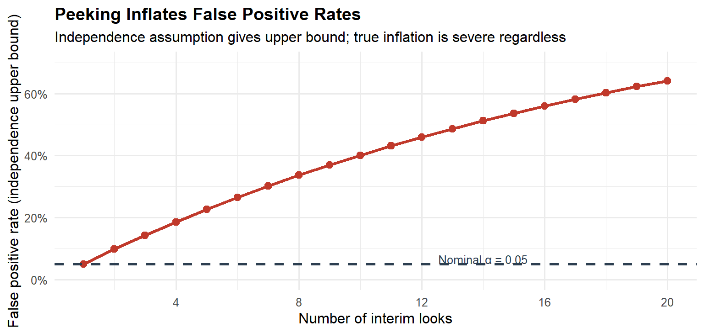
The solution is not to avoid monitoring, it is to use alpha-spending functions (O’Brien-Fleming, Pocock, implementable via gsDesign), the mixture Sequential Probability Ratio Test (mSPRT) framework of Johari et al. (2017), which provides always-valid confidence intervals allowing continuous monitoring while preserving the pre-specified frequentist error guarantee, or the Bayesian decision-theoretic approach discussed in Part V. The mSPRT is particularly important in practice because it yields confidence intervals that remain valid at any stopping time, unlike classical group sequential designs which only control error at pre-specified interim analyses.
Phase 5: Analysis and Diagnostics
Before interpreting the primary metric estimate, three diagnostic checks must pass.
SRM check. Run a chi-squared test on the observed arm sizes against the intended allocation. Any SRM at p < 0.001 invalidates the experiment.
Pre-experiment covariate balance. The arms should be indistinguishable on pre-experiment values of the primary metric and other stable user characteristics. Large imbalances suggest a platform problem.
CUPED variance reduction. CUPED (Deng et al., 2013) uses the pre-experiment metric value X_i as a covariate to reduce the variance of the ATE estimator without introducing bias:
\tilde{Y}_i = Y_i - \hat{\theta}(X_i - \bar{X}), \quad \hat{\theta} = \frac{\text{Cov}(Y, X)}{\text{Var}(X)}
CUPED requires two assumptions: (1) the covariate X_i is measured pre-treatment and is therefore unaffected by the treatment assignment; and (2) the relationship between X_i and Y_i is approximately linear. Violation of the first assumption introduces bias; violation of the second reduces the variance reduction achieved but does not introduce bias. When the linearity assumption is questionable, a more flexible regression adjustment (e.g., including polynomial terms or using a machine-learning estimator) can capture additional covariance, though the bias-variance trade-off must be assessed.
WarningCUPED: covariate leakage
A practical danger that is easy to miss: if the X_i measurement window overlaps with the treatment period, or if treatment effects retroactively contaminate the pre-period records (for example, through algorithmic personalisation that updates historical engagement scores in real time), assumption (1) is violated and the CUPED estimator is biased in the direction of the contamination. Always verify that the covariate is computed exclusively on data timestamped strictly before the experiment start date. Even a partial overlap of a few hours can be sufficient to bias the estimate when the treatment effect is large.
In practice, CUPED reduces required sample size by 30–50% for engagement metrics with stable user behaviour. It is a free variance reduction that most organisations leave on the table.
Phase 6: Decision and Post-launch Monitoring
A correctly designed experiment does not end at the p-value. It ends at a decision informed by effect size, uncertainty, and the asymmetric costs of the two error types.
Guardrail metrics. Alongside the primary metric, every experiment must define guardrail metrics: key business health indicators that must not be degraded by the treatment. Common guardrails include page load time, crash rate, revenue per user, and customer support ticket volume. Guardrails serve a different function from secondary metrics, they are not diagnostic, they are constraints. A treatment that significantly improves the primary metric but significantly degrades a guardrail should not ship, regardless of the primary metric’s p-value. Guardrail metrics should be subject to multiple testing correction (Bonferroni or Holm) to control the family-wise probability of missing a degradation.
Treatment effect heterogeneity. The ATE is the average across all units. In practice, the treatment effect often varies substantially across subpopulations, by device type, user tenure, geography, or activity level. The Conditional Average Treatment Effect (CATE) captures this variation. Post-hoc subgroup analysis is prone to data-dredging: if you cut the data enough ways, something will appear significant. The mitigation is to pre-specify a small number of heterogeneous segments (typically two to four) in the experiment brief, and to apply multiple testing corrections within the heterogeneity analysis. For exploratory heterogeneity analysis, use causal forests (grf package) or similar honest partitioning methods, but treat the results as hypothesis-generating rather than decision-supporting.
Universal holdout groups, a small fraction of users permanently in control, are the only reliable mechanism for detecting long-run effects that diverge from short-run signals. Novelty effects, where users engage more with any change simply because it is new, are particularly common in UI experiments and can inflate short-run estimates significantly. Universal holdouts are the only way to distinguish true product lift from transient novelty.
We discuss the decision framework in Part V.
Part III: The p-Value Illusion
What the p-value Doesn’t Tell You
The p-value answers one narrow question:
p = \mathbb{P}\left(|\hat{\tau}| \geq |\hat{\tau}_{\text{obs}}| \;\Big|\; H_0: \tau = 0\right)
It does not answer what is the probability that the treatment is beneficial, what is the expected cost of the wrong decision, or whether the effect is large enough to matter commercially.
The business question is \mathbb{P}(H_1 \mid \text{data}), the posterior probability that the treatment is genuinely positive. By Bayes’ theorem, this depends on the prior probability of a true effect, the statistical power, and the significance level simultaneously. The p-value addresses only one of these inputs.
The False Positive Risk
Even a perfectly conducted, non-peeked test carries a false positive risk (also called the False Discovery Rate or False Positive Report Probability; Colquhoun, 2017) that depends on the base rate of true effects. This is the probability that a statistically significant result is actually a false positive, distinct from the Type I error rate \alpha, which is the probability of a significant result given that the null is true. If only 10% of tested hypotheses have genuine positive effects (\pi_0 = 0.9), then at \alpha = 0.05 and power = 0.80:
\text{FPRisk} = \frac{\alpha \cdot \pi_0}{\alpha \cdot \pi_0 + (1-\beta)(1-\pi_0)} = \frac{0.045}{0.045 + 0.08} \approx 0.36
Thirty-six percent of statistically significant results are false positives. This is not an exotic scenario, a 10% base rate for genuinely positive feature tests is generous for a mature product. The conventional misreading, that p = 0.05 implies a 95% chance the treatment is better, overstates confidence by a factor of roughly 2.5. The false positive risk makes explicit what the p-value alone cannot: the probability that a significant finding is a true discovery depends on the prior probability of a real effect, the power of the test, and the significance threshold simultaneously.
WarningThe Core Problem with NHST
Standard hypothesis testing was designed for evaluating agricultural field trials, not for making production deployment decisions under asymmetric costs. The \alpha = 0.05 threshold was a convenience proposed by Fisher in 1925, not a universal decision rule. Treating it as one is the root cause of most experimentation failures.
Part IV: Advanced Designs for Violated SUTVA
When SUTVA Fails: Network Effects and Marketplaces
As introduced in the counterfactual post, SUTVA requires that a unit’s potential outcomes are unaffected by other units’ treatment assignments. In networked platforms and two-sided marketplaces, this assumption fails by construction.
Consider a ride-hailing platform testing a new driver-repositioning algorithm. Treatment drivers receive nudges to move toward high-demand areas. Control drivers do not. But the repositioning of treatment drivers changes the supply landscape in every zone, affecting the earnings of control drivers regardless of their own assignment. The two-group comparison no longer estimates the ATE of the repositioning intervention, it estimates a biased mixture of the direct effect and the spillover effect. Johari et al. (2022) show this bias can reach 100% in two-sided marketplace settings.
Airbnb faces the analogous problem on the supply side: a pricing experiment on some hosts changes their booking probabilities, which feeds back into search rankings for all hosts.
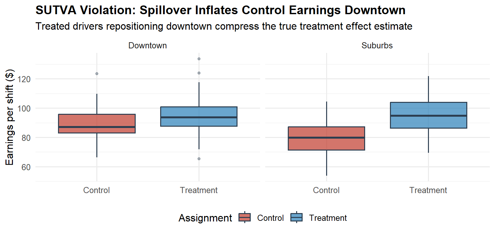
Switchback Experiments
When interference operates through a shared resource pool, the correct design is the switchback experiment. The entire market alternates between treatment and control conditions according to a random time schedule. At any given moment, every unit experiences the same condition, temporal isolation replaces spatial isolation as the identification strategy. Statsig’s overview provides a clear practical introduction to when and how to deploy this design.
The analysis of switchback data requires three adjustments: the unit of analysis is the time block rather than the individual user; standard errors must be clustered at the time-block level to account for within-block correlation; and burn-in and burn-out windows must be excluded at block boundaries to remove carryover from the previous condition. Time blocks should be sufficiently long to minimise carryover effects, a block length shorter than the time needed for the system to reach a new equilibrium will bias the estimate toward zero. In practice, block lengths of at least one hour (for ride-hailing) or one day (for booking platforms) are typical.
Code
set.seed(2026)
n_days <- 60L
n_per_day <- 200L
true_eff <- 0.05
day_id <- rep(1:n_days, each = n_per_day)
trt_day <- sample(c(0L, 1L), n_days, replace = TRUE)
treatment <- rep(trt_day, each = n_per_day)
day_re <- rep(rnorm(n_days, 0, 0.15), each = n_per_day)
noise_sw <- rnorm(n_days * n_per_day, 0, 0.30)
y_sw <- 1.00 + true_eff * treatment + day_re + noise_sw
df_sb <- data.frame(day = day_id, treatment = treatment, y = y_sw)
mod_naive <- feols(y ~ treatment, data = df_sb)
mod_clust <- feols(y ~ treatment, cluster = ~day, data = df_sb)
se_naive <- se(mod_naive)["treatment"]
se_clust <- se(mod_clust)["treatment"]
est_sw <- coef(mod_clust)["treatment"]
day_means_sb <- df_sb |>
dplyr::group_by(day, treatment) |>
dplyr::summarise(y_mean = mean(y), .groups = "drop") |>
dplyr::mutate(arm = ifelse(treatment == 1, "Treatment", "Control"))
ggplot(day_means_sb, aes(x = day, y = y_mean, colour = arm)) +
geom_point(alpha = 0.75, size = 2.1) +
geom_hline(
data = data.frame(
arm = c("Control", "Treatment"),
yint = c(mean(day_means_sb$y_mean[day_means_sb$treatment == 0]),
mean(day_means_sb$y_mean[day_means_sb$treatment == 1]))
),
aes(yintercept = yint, colour = arm),
linetype = "dashed", linewidth = 1.0
) +
scale_colour_manual(values = c("Control" = "#c0392b", "Treatment" = "#2980b9")) +
annotate("text", x = 3, y = max(day_means_sb$y_mean) * 0.97,
label = sprintf("Naive SE: %.4f\nClustered SE: %.4f\nInflation factor: %.1fx",
se_naive, se_clust, se_clust / se_naive),
hjust = 0, size = 3.2, colour = "#2c3e50") +
labs(
x = "Day (time block)",
y = "Daily mean outcome",
colour = "Assignment",
title = "Switchback Experiment: Day-Level Randomisation",
subtitle = "Clustering at the day level is required for valid inference"
) +
theme_minimal(base_size = 12) +
theme(plot.title = element_text(face = "bold"),
legend.position = "bottom")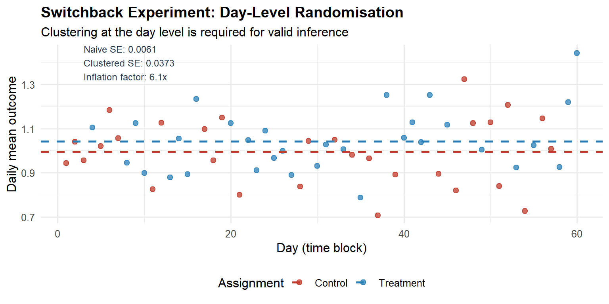
Graph-Cluster Randomisation
Switchback experiments are effective when interference operates through a shared temporal resource, but they are not the only solution. When interference propagates through a network structure (social graphs, communication networks), the appropriate design is graph-cluster randomisation (Ugander et al., 2013). Units are partitioned into clusters that are densely connected internally but sparsely connected to each other; entire clusters are then randomised to treatment or control. The intuition is that most spillover occurs within clusters, and by treating or controlling an entire cluster, the within-cluster spillover is absorbed into the cluster-level treatment effect.
The cost is reduced effective sample size (clusters, not individuals, are the unit of randomisation) and residual bias from inter-cluster spillover. The reduction in effective sample size can be quantified by the cluster-level intraclass correlation coefficient (ICC): higher network autocorrelation implies more variance inflation. In practice, graph-cluster randomisation is the method of choice for social-network experiments at Meta, LinkedIn, and similar platforms where network interference is the primary concern.
Interleaving for Ranking Systems
For experiments on ranking and recommendation algorithms, Airbnb developed interleaving: a single result page blends items from both the treatment and control rankers simultaneously, and user clicks are attributed to the ranker that surfaced the clicked item.
The within-user comparison eliminates all user-level confounders, producing a roughly 50-fold sensitivity improvement over traditional A/B tests at the same traffic volume. Airbnb estimates that a meaningful signal can be obtained with approximately 6% of the traffic required for a traditional A/B test.
The limitation is that interleaving measures only relative preference between two rankers, not the absolute impact on downstream business metrics. It functions as a rapid screening tool. The three-stage pipeline, offline evaluation, online interleaving, confirmatory A/B test, is the industrial-scale architecture for high-cadence algorithmic experimentation.
Encouragement Designs and Instrumental Variables
Sometimes treatment assignment cannot be forced. A feature requires opt-in. A campaign can be shown to users but not compelled to be acted on. In these cases, as Spotify Engineering describes in their encouragement design post, the random assignment becomes an instrument for actual treatment receipt rather than the treatment itself.
The Complier Average Causal Effect (CACE), recovered via two-stage least squares (the Wald IV estimator):
\text{CACE} = \frac{\hat{\tau}_{\text{ITT}}}{\hat{\tau}_{\text{first stage}}} = \frac{\mathbb{E}[Y \mid Z=1] - \mathbb{E}[Y \mid Z=0]}{\mathbb{E}[W \mid Z=1] - \mathbb{E}[W \mid Z=0]}
where Z is the random assignment (the instrument), W is actual treatment receipt, and the denominator is the first-stage effect of assignment on treatment take-up. Under the assumption of no always-takers (units who take treatment regardless of assignment), the denominator simplifies to \hat{P}(\text{complied} \mid Z=1), yielding the formula commonly presented in A/B testing contexts.
This is appropriate when three identifying assumptions hold: (1) relevance: assignment Z must affect treatment receipt W (non-zero first stage); (2) exclusion restriction: assignment Z affects the outcome Y only through its effect on W; and (3) monotonicity: there are no defiers, no unit would take treatment when not assigned but refuse it when assigned. Under these assumptions, the Wald estimator recovers the CACE, the average treatment effect among compliers. Spotify applies this design when they want to estimate feature impact in contexts where providing a pure control group is infeasible or undesirable.
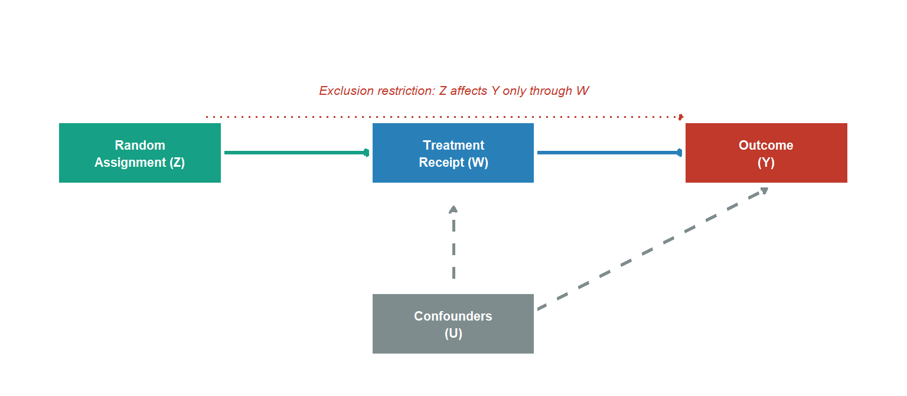
Part V: Replacing NHST with a Decision Framework
Why NHST Is the Wrong Framework for Business Decisions
NHST answers: is the data inconsistent with a zero effect? The business question is: what is the expected value of shipping this feature, given the observed data and the costs of being wrong?
These are different questions with different inputs. NHST ignores the prior probability of a genuine effect, the asymmetric costs of false positives versus false negatives, and the magnitude of the effect. It produces a binary output from a world that is continuous.
This does not mean that frequentist methods have no role. For organisations that must maintain a quantifiable Type I error rate across hundreds of experiments, a legitimate regulatory-style requirement, the frequentist framework with alpha-spending and multiple testing correction is the correct tool. Frequentist methods are retained throughout for estimation and for platform-level error control; the Bayesian framework enters specifically at the individual-experiment decision stage. The Bayesian framework is not a replacement for frequentist inference; it is a complement. The two frameworks answer different questions: the frequentist framework controls error rates, the Bayesian framework supports decision-making under uncertainty. A mature experimentation programme uses both: frequentist guarantees for platform integrity and guardrail monitoring, Bayesian decision theory for the ship/hold decision on each individual experiment. The tension between them is resolvable once it is recognised that they serve different purposes.
As Stanford’s experimentation research documents, industrial A/B testing is increasingly moving toward Bayesian and decision-theoretic frameworks precisely because product decisions require probability statements, not binary significance labels.
Bayesian A/B Testing
For a binary metric, model the conversion rate with a Beta-Binomial conjugate update. Prior: \theta \sim \text{Beta}(\alpha_0, \beta_0). After observing s successes in n trials:
\theta \mid \text{data} \sim \text{Beta}(\alpha_0 + s, \;\beta_0 + n - s)
The key decision-relevant quantities are the posterior probability of superiority (\mathbb{P}(\theta_B > \theta_A \mid \text{data})), the expected lift (\mathbb{E}[\theta_B - \theta_A \mid \text{data}]), and a 95% credible interval that is directly interpretable as: given the prior and the observed data, there is a 95% posterior probability that the true lift lies in [L, U].
The posterior is a complete description of uncertainty about the conversion rates, but it is not itself a decision rule. Converting posterior probabilities into actions requires specifying a loss function, the asymmetric costs of the two error types, which the Expected Loss framework below provides.
Code
set.seed(2026)
n_ctrl_b <- 15000L; s_ctrl_b <- 1425L # 9.5% conversion
n_trt_b <- 15000L; s_trt_b <- 1650L # 11.0% conversion
pa0 <- 5; pb0 <- 45
pa_ctrl <- pa0 + s_ctrl_b; pb_ctrl <- pb0 + n_ctrl_b - s_ctrl_b
pa_trt <- pa0 + s_trt_b; pb_trt <- pb0 + n_trt_b - s_trt_b
n_mc <- 500000L
set.seed(999)
th_ctrl <- rbeta(n_mc, pa_ctrl, pb_ctrl)
th_trt <- rbeta(n_mc, pa_trt, pb_trt)
prob_sup <- mean(th_trt > th_ctrl)
exp_lift <- mean(th_trt - th_ctrl)
ci_lift <- quantile(th_trt - th_ctrl, c(0.025, 0.975))
idx_plot <- sample(n_mc, 30000)
df_bay <- data.frame(
rate = c(th_ctrl[idx_plot], th_trt[idx_plot]),
group = rep(c("Control", "Treatment"), each = 30000)
)
ggplot(df_bay, aes(x = rate, fill = group, colour = group)) +
geom_density(alpha = 0.45, linewidth = 0.9) +
scale_fill_manual(values = c("Control" = "#c0392b", "Treatment" = "#2980b9")) +
scale_colour_manual(values = c("Control" = "#c0392b", "Treatment" = "#2980b9")) +
scale_x_continuous(labels = scales::percent_format(accuracy = 0.1)) +
labs(
x = "Conversion rate",
y = "Posterior density",
fill = NULL, colour = NULL,
title = "Bayesian A/B Test: Posterior Distributions",
subtitle = sprintf(
"P(Treatment > Control) = %.1f%% | E[Lift] = %.2f pp | 95%% CrI: [%.2f, %.2f] pp",
prob_sup * 100, exp_lift * 100,
ci_lift[1] * 100, ci_lift[2] * 100
)
) +
theme_minimal(base_size = 12) +
theme(plot.title = element_text(face = "bold"),
legend.position = "bottom")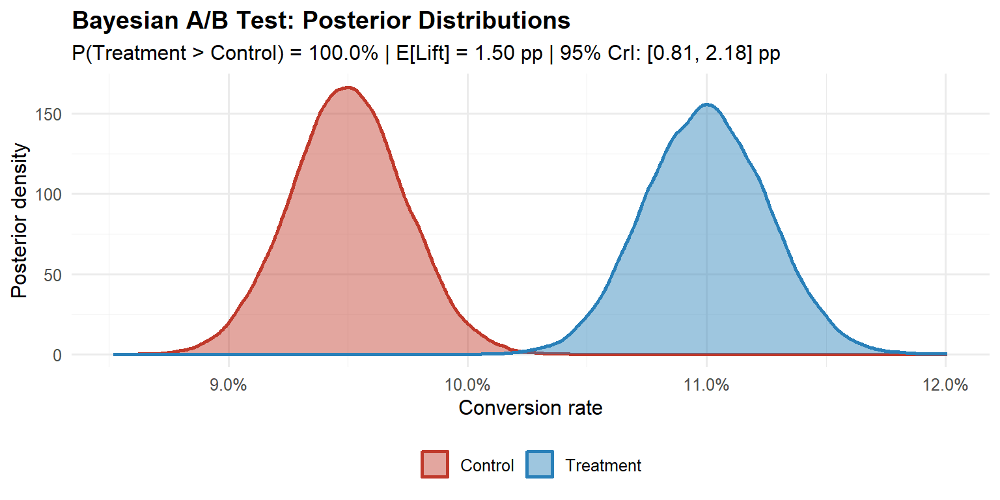
In R, the bayesAB package implements this conjugate update directly: bayesTest(control_data, treatment_data, priors = c(alpha = 5, beta = 45), distribution = "bernoulli") returns the posterior probability of superiority and a plot of both posteriors in one call. A detailed implementation of this framework, including the sensitivity of the posterior to prior choice, is covered in the Medium Bayesian A/B Testing in R guide.
The Expected Loss Framework
Define the decision-theoretic losses:
- Loss of shipping treatment when control is better: \ell_{\text{ship}} = \max(\theta_A - \theta_B, 0)
- Loss of withholding treatment when it is better: \ell_{\text{hold}} = \max(\theta_B - \theta_A, 0)
The expected losses under the posterior are:
\mathcal{L}_{\text{ship}} = \mathbb{E}[\max(\theta_A - \theta_B, 0) \mid \text{data}], \quad \mathcal{L}_{\text{hold}} = \mathbb{E}[\max(\theta_B - \theta_A, 0) \mid \text{data}]
The decision rule is: ship when \mathcal{L}_{\text{ship}} < \varepsilon, where \varepsilon is a business-specified tolerance calibrated to the cost of error. A platform change with irreversible user data implications warrants a much lower \varepsilon than a button-colour test.
Code
set.seed(42)
p0_el <- 0.095
lift_el <- 0.015
eps_el <- 0.001
ns_el <- seq(500, 20000, by = 500)
ls_vec <- ln_vec <- numeric(length(ns_el))
for (i in seq_along(ns_el)) {
ni <- ns_el[i]
sa <- rbinom(1, ni, p0_el)
sb <- rbinom(1, ni, p0_el + lift_el)
ta <- rbeta(50000, 1 + sa, 1 + ni - sa)
tb <- rbeta(50000, 1 + sb, 1 + ni - sb)
ls_vec[i] <- mean(pmax(ta - tb, 0))
ln_vec[i] <- mean(pmax(tb - ta, 0))
}
n_stop_el <- ns_el[which(ls_vec < eps_el)[1]]
df_el <- data.frame(
n = rep(ns_el, 2),
loss = c(ls_vec, ln_vec) * 100,
type = rep(c("E[Loss | ship treatment]", "E[Loss | keep control]"),
each = length(ns_el)),
stringsAsFactors = FALSE
)
col_ship <- "#c0392b"
col_control <- "#2980b9"
col_eps <- "#2c3e50"
col_stop <- "#27ae60"
ggplot(df_el, aes(x = n, y = loss)) +
geom_line(aes(colour = type, linetype = type), linewidth = 1.1) +
geom_hline(yintercept = eps_el * 100, linetype = "dotted",
colour = col_eps, linewidth = 0.9) +
{ if (!is.na(n_stop_el))
geom_vline(xintercept = n_stop_el, linetype = "dashed",
colour = col_stop, linewidth = 1.0) } +
facet_wrap(~ type, ncol = 1, scales = "free_y") +
scale_colour_manual(values = c(col_ship, col_control)) +
scale_linetype_manual(values = c("solid", "dashed")) +
scale_x_continuous(labels = scales::comma_format(),
breaks = seq(0, 20000, 5000)) +
labs(
x = "Sample size per arm",
y = "Expected loss (percentage points)",
colour = NULL, linetype = NULL,
title = "Expected Loss Converges with Accumulating Data",
subtitle = "Green dashed line: ship when E[Loss | ship] < ε"
) +
theme_minimal(base_size = 12) +
theme(
plot.title = element_text(face = "bold", size = 14),
plot.subtitle = element_text(size = 10, colour = "#555555", margin = margin(b = 10)),
legend.position = "none",
panel.grid.minor = element_blank(),
strip.background = element_rect(fill = "#f8f9fa", colour = NA),
strip.text = element_text(face = "bold", size = 11, colour = "#2c3e50"),
panel.spacing = unit(1.2, "lines")
)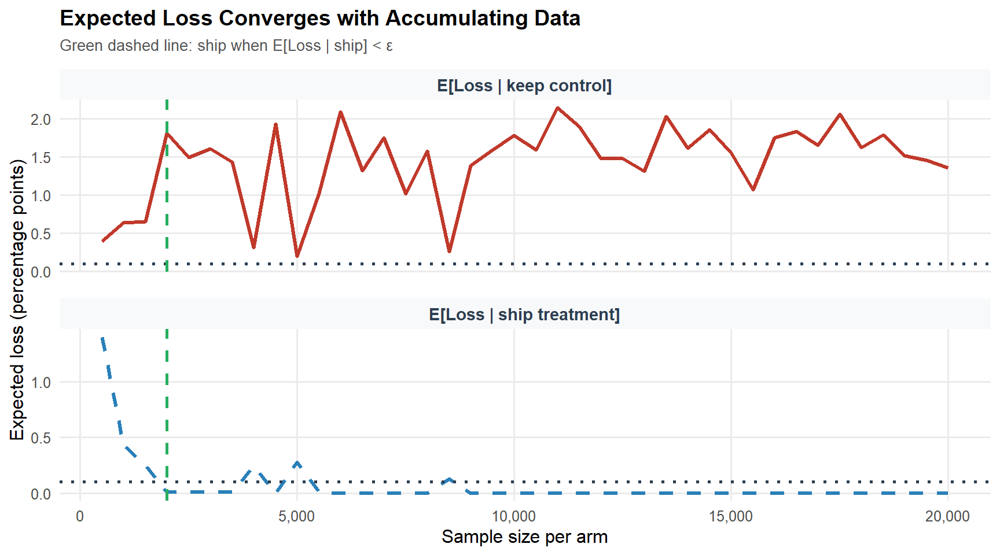
The Bayesian framework also provides a coherent resolution to the peeking problem, with an important qualification. Because the posterior updates continuously and correctly as data arrives, checking expected loss at any interim produces valid Bayesian probability statements about the treatment effect. However, this coherence holds for posterior probabilities, not for frequentist error guarantees: if the decision rule must control the frequentist Type I error rate, Bayesian optional stopping does not automatically preserve that property without further calibration (Rubin, 1984; Bayarri and Berger, 2004). In practice, the expected loss decision rule, stop and ship when \mathcal{L}_{\text{ship}} < \varepsilon, is appropriate when the organisation is willing to make decisions based on posterior probabilities rather than frequentist error guarantees. The experiment becomes an information-gathering process that terminates when the expected value of additional data falls below the cost of delay. For organisations that require frequentist error control alongside Bayesian decision-making, the mixture Sequential Probability Ratio Test (mSPRT; Johari et al., 2017) provides always-valid confidence intervals that are safe under optional stopping while maintaining frequentist coverage.
Part VI: Fat Tails and Optimal Experimentation Strategy
The Distribution of Innovation Quality
Standard power analysis assumes a thin-tailed distribution of true effect sizes: a fixed MDE, normally distributed outcomes, finite variance. The empirical distribution of innovation quality across technology products is not thin-tailed.
Azevedo, Deng, Montiel-Olea, Rao, and Weyl (2020) analyse A/B test outcomes from Microsoft Bing’s EXP platform and find the distribution of true effect sizes follows a power law with a tail index in the range 1.5–2.5. When the tail index falls below 2, the variance of the effect size distribution is infinite; between 2 and 3, the variance is finite but the distribution is sufficiently heavy-tailed that extreme observations dominate the mean and the Central Limit Theorem converges slowly. This is an important distinction: the fat tails discussed here characterise the distribution of true effects across experiments, not the distribution of outcomes within a single experiment. Within any individual experiment, the CLT-based tests from Part II remain valid provided the outcome metric has finite variance, which virtually all standard business metrics do. The strategic implication is about the distribution of innovation quality, not about the validity of individual experiment analyses.
Code
alpha_vals <- c(2.0, 2.5, 3.5, 5.0)
n_seq_ft <- seq(100, 50000, by = 100)
labels_ft <- c("α = 2.0 (very fat)", "α = 2.5 (fat)",
"α = 3.5 (thin)", "α = 5.0 (very thin)")
df_ft <- do.call(rbind, lapply(seq_along(alpha_vals), function(j) {
a <- alpha_vals[j]
mp_raw <- n_seq_ft^((a - 3) / 2)
data.frame(n = n_seq_ft,
mp = mp_raw / mp_raw[1],
alpha = labels_ft[j])
}))
ggplot(df_ft, aes(x = n, y = mp, colour = alpha, linetype = alpha)) +
geom_line(linewidth = 1.0) +
scale_x_continuous(labels = scales::comma_format()) +
scale_colour_manual(values = c("#c0392b", "#e67e22", "#27ae60", "#2980b9")) +
scale_linetype_manual(values = c("solid", "solid", "dashed", "dashed")) +
labs(
x = "Sample size per arm",
y = "Normalised marginal product of data",
colour = "Tail index", linetype = "Tail index",
title = "Fat Tails Change the Optimal Experimentation Strategy",
subtitle = "Marginal product normalised to 1 at n = 100"
) +
theme_minimal(base_size = 12) +
theme(plot.title = element_text(face = "bold"),
legend.position = "bottom")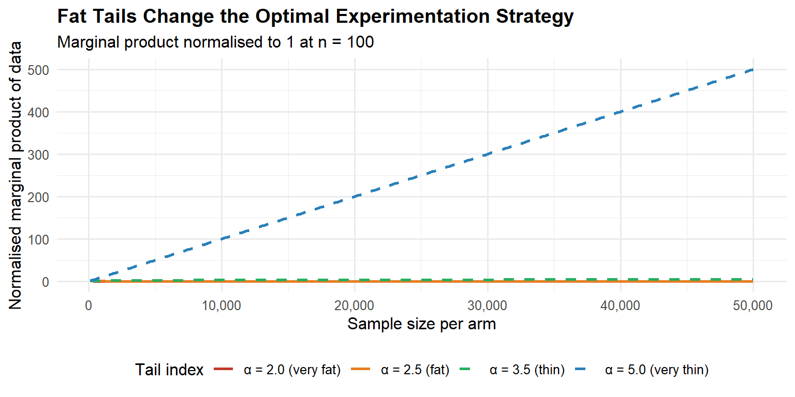
Strategic Implication: Velocity vs. Precision
The tail index determines the optimal experimentation strategy:
| Domain characteristic | Tail regime | Optimal strategy |
|---|---|---|
| Incremental UI polish | Thin (\alpha > 3) | High-powered precision tests |
| ML ranking / recommendations | Fat (\alpha < 3) | Many small fast experiments |
| Pricing algorithms | Fat (\alpha < 3) | Velocity over sample depth |
| Mature product copy tests | Thin (\alpha > 3) | Adequate power, single test |
Azevedo et al. (2020) estimate the tail index for Bing click-through-rate experiments to be in the range 1.5–2.5. The recommendation: in fat-tail domains, prioritise experimental velocity over statistical precision. Run more small tests. Allocate budget to breadth of hypotheses, not depth of any single test. Flag outliers for confirmatory replication rather than relying on a single high-powered test.
NotePractical heuristic
If you are optimising an algorithm (ranking, pricing, ML models), optimise for experimental velocity: more ideas tested per unit time, smaller samples per idea. If you are testing incremental product copy or UI changes on a mature surface, power your experiments properly, you need precision, not breadth.
Part VII: Industrial-Scale Infrastructure
What Mature Platforms Actually Do
Uber’s XP platform supports over 1,000 simultaneous experiments spanning A/B/N designs, multi-armed bandits, causal inference pipelines, and holdout analyses. The key capabilities that distinguish a mature platform from a notebook-based analysis are: deterministic assignment via hash functions with avalanche properties; Sample Ratio Mismatch detection as a mandatory pre-analysis gate; universal holdout groups permanently in control to measure cumulative long-term effects; CUPED variance reduction applied automatically to every primary metric; guardrail metrics with pre-specified degradation thresholds; and multiple testing correction for secondary and guardrail metrics.
These are minimum infrastructure requirements for trustworthy experimentation at scale, not exotic capabilities. Organisations running experiments via a home-built dashboard and a manual t-test in a notebook are not running experiments, they are generating noise with additional steps.
Experiment Prioritisation
At scale, the question is not merely how to run a single experiment correctly, but which experiments to run. Not all experiments have equal expected value. A simple prioritisation framework ranks experiments by their Expected Value of Information (EVI): the reduction in expected loss from making a more informed decision, weighted by the probability that the decision would change and the business impact of that change. Concretely, an experiment has high EVI when: (1) the prior uncertainty about the treatment effect is large; (2) the decision is close (the expected loss of the default action is similar to the expected loss of the alternative); and (3) the business impact of the decision is high. Experiments on core revenue drivers with ambiguous priors should be prioritised over button-colour tests on low-traffic surfaces, regardless of how easy the latter are to implement.
In practice, most organisations use a simpler heuristic: score each proposed experiment on a 1–5 scale for potential impact, ease of implementation, and strategic alignment, then sort by the product. This is a rough approximation to EVI, but it is far better than the default of running whatever the loudest stakeholder requests.
Multiple Testing and the Multiplicity Trap
A typical enterprise A/B test involves dozens of secondary metrics, multiple segmentation cuts (device type, geography, user tenure), and possibly multiple variants. The false discovery rate (FDR) scales with the number of simultaneous tests. With m independent tests at \alpha = 0.01 and 90% of true nulls, the expected number of false positives among significant results is m \cdot \alpha \cdot \pi_0. At m = 200 metrics, this is 1.8 expected false discoveries, before accounting for the correlation among metrics.
The two main correction approaches are Bonferroni (\alpha / m, which controls the family-wise error rate but is extremely conservative for large m) and Benjamini-Hochberg (which controls the false discovery rate and is less conservative, making it appropriate for discovery contexts). Pre-registration, specifying primary and secondary metrics before the experiment runs, reduces the multiple testing burden by removing the post-hoc selection of which tests to report.
Part VIII: A Practical End-to-End Example
Scenario: Google Ads and Hotel Bookings
A hotel chain wants to know whether a Google Ads campaign increases bookings and, if so, whether it delivers a positive return on adspend (ROAS). The experiment is geo-segmented: some geographic markets receive the advertising treatment, others serve as controls. This is a common design in marketing analytics, individual-level randomisation is impractical for an ad campaign that targets an entire market, so the geo-segment is the unit of randomisation and the unit of analysis.
Two causal questions drive the design:
- Does adspend increase bookings? (Is the ATE positive and commercially meaningful?)
- Was there a return on adspend? (Does the ATE exceed the cost per booking-day?)
Note that both questions require a causal answer, not a correlation. Because geo-segments are assigned to treatment and control at random, we inherit the identification strategy from Part I: the difference in means is an unbiased estimator of the ATE, provided SUTVA holds. In a geo-segmented design, SUTVA is more plausible than in a two-sided marketplace, a treatment geo does not directly contaminate the booking outcomes of a control geo, though spillovers through national brand awareness remain a residual concern.
Step 1: Power Analysis
Before the campaign launches, the team runs a power analysis. Historical data shows an average of roughly 200 bookings per geo-segment per day in the pre-period, with a standard deviation of about 40. The minimum commercially meaningful lift is 50 bookings per segment per day, roughly 25 % of the baseline. With a two-sample t-test at \alpha = 0.05 and 80 % power:
library(pwr)
mde <- 50 # minimum detectable effect (bookings per segment-day)
sd_ <- 40 # estimated pooled SD from pre-period
d <- mde / sd_ # Cohen's d = 1.25
result <- pwr.t.test(d = d, sig.level = 0.05, power = 0.80,
type = "two.sample")
ceiling(result$n) # 12 geo-segments per armWith 12 geo-segments per arm we need a minimum of 24 markets. Forty are available, so the design is feasible and will run with 20 per arm, giving slightly more than the minimum power.
TipSensitivity to the SD estimate
The SD estimate from the pre-period is critical. If the true between-geo SD is 60 rather than 40, the same design drops to roughly 55 % power. Always run a sensitivity grid before committing:
sapply(c(30, 40, 50, 60), function(s)
ceiling(pwr.t.test(d = mde/s, sig.level = 0.05,
power = 0.80, type = "two.sample")$n))
# SD = 30 → 7 | SD = 40 → 12 | SD = 50 → 17 | SD = 60 → 24 per armIf the grid suggests you may be underpowered, recall from Part II that under-powered experiments do not merely miss true effects, they systematically exaggerate the effects they do find (Type M error).
Step 2: Platform Calibration, Balance Check and Parallel Trends
As discussed in Phase 3 of the pipeline (Part II), any experiment must pass a calibration check before the treatment period data can be trusted. In a large-scale online platform this takes the form of an A/A test and a Sample Ratio Mismatch (SRM) check. In a geo-segmented design with 20 markets, the equivalent check is twofold.
SRM check. In a real deployment, the assignment mechanism is stochastic and the resulting split must be verified. Here the split is deterministic by construction (rep(c(0L, 1L), each = 10)), so the check passes trivially, but the same test applies in production. A chi-squared test on the observed arm counts against the 50/50 target must return p > 0.001 to proceed; any result at or below this threshold invalidates the experiment.
# Our simulated design: perfect split by construction
chisq.test(c(10, 10), p = c(0.5, 0.5))$p.value # 1.000 proceed
# What a real SRM looks like (e.g. assignment bug in production)
chisq.test(c(18, 2), p = c(0.5, 0.5))$p.value # 0.0003 do not proceed, experiment invalidatedParallel trends check. Because the unit of analysis is a geo-segment rather than a user, we cannot run a literal A/A test. Instead, we verify that the two arms were exchangeable before the campaign started: the pre-period trends must be approximately parallel. A significant pre-period divergence would indicate that the random assignment did not balance the arms on the primary outcome trajectory, exactly the failure mode that an A/A test detects on a digital platform.
Code
set.seed(2026)
n_geo <- 20L
n_pre <- 40L
n_exp <- 28L
base <- 200
sd_geo <- 12
sd_day <- 35
true_ate <- 96.2
geo_re <- rnorm(n_geo, 0, sd_geo)
assign_geo <- rep(c(0L, 1L), each = n_geo / 2)
rows <- do.call(rbind, lapply(seq_len(n_geo), function(g) {
total_days <- n_pre + n_exp
noise <- rnorm(total_days, 0, sd_day)
treatment <- ifelse(seq_len(total_days) > n_pre, assign_geo[g], 0L)
bookings <- base + geo_re[g] + true_ate * treatment + noise
data.frame(
geo = g,
day = seq_len(total_days),
period = ifelse(seq_len(total_days) <= n_pre, 0L, 1L),
assigned = assign_geo[g],
bookings = pmax(bookings, 0)
)
}))
daily_agg <- rows |>
dplyr::group_by(day, assigned) |>
dplyr::summarise(mean_bookings = mean(bookings), .groups = "drop") |>
dplyr::mutate(arm = ifelse(assigned == 1, "Treatment (Adspend)", "Control"))
ggplot(daily_agg, aes(x = day, y = mean_bookings, colour = arm)) +
geom_line(linewidth = 0.9, alpha = 0.85) +
geom_vline(xintercept = n_pre + 0.5, linetype = "dashed",
colour = "#2c3e50", linewidth = 0.9) +
annotate("text", x = n_pre - 1, y = max(daily_agg$mean_bookings) * 0.97,
label = "Experiment\nstarts", hjust = 1,
colour = "#2c3e50", size = 3.1) +
annotate("rect", xmin = n_pre + 0.5, xmax = n_pre + n_exp + 0.5,
ymin = -Inf, ymax = Inf,
fill = "#2980b9", alpha = 0.06) +
scale_colour_manual(values = c("Control" = "#c0392b",
"Treatment (Adspend)" = "#2980b9")) +
labs(
x = "Day",
y = "Mean bookings per geo-segment",
colour = NULL,
title = "Hotel Bookings A/B Experiment: Pre and Post Periods",
subtitle = "Shaded region = experiment period | Dashed line = intervention start"
) +
theme_minimal(base_size = 12) +
theme(plot.title = element_text(face = "bold"),
legend.position = "bottom")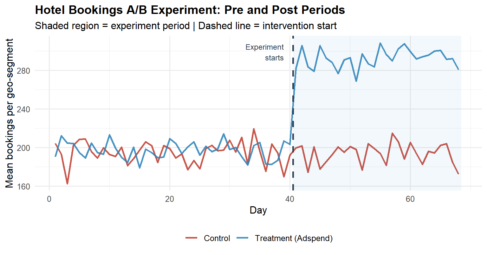
The pre-period lines track each other closely. If they were diverging, the post-period estimate would be confounded by whatever pre-existing trend was already separating the arms, and no amount of statistical testing would rescue the causal interpretation.
Step 3: Distributional Diagnostics and Test Selection
Following the decision tree in the “Which Statistical Test to Use” section, bookings per geo-segment is a continuous metric with unknown variances. Before committing to a parametric test, we inspect the per-arm distributions on experiment-period data aggregated to the geo-segment level (n = 10 per arm).
Code
exp_data <- rows |>
dplyr::filter(period == 1) |>
dplyr::group_by(geo, assigned) |>
dplyr::summarise(mean_bookings = mean(bookings), .groups = "drop") |>
dplyr::mutate(arm = ifelse(assigned == 1, "Treatment", "Control"))
# --- Q-Q plots ---
p_qq <- ggplot(exp_data, aes(sample = mean_bookings, colour = arm)) +
stat_qq(size = 2.2, alpha = 0.8) +
stat_qq_line(linewidth = 0.8) +
facet_wrap(~arm) +
scale_colour_manual(values = c("Control" = "#c0392b",
"Treatment" = "#2980b9")) +
labs(title = "Q-Q Plots by Arm",
x = "Theoretical quantiles", y = "Sample quantiles") +
theme_minimal(base_size = 11) +
theme(legend.position = "none",
plot.title = element_text(face = "bold"))
# --- Density histograms ---
p_hist <- ggplot(exp_data, aes(x = mean_bookings, fill = arm)) +
geom_histogram(aes(y = after_stat(density)),
binwidth = 12, colour = "white",
alpha = 0.70, position = "identity") +
geom_density(aes(colour = arm), linewidth = 0.9, fill = NA) +
scale_fill_manual(values = c("Control" = "#c0392b",
"Treatment" = "#2980b9")) +
scale_colour_manual(values = c("Control" = "#c0392b",
"Treatment" = "#2980b9")) +
labs(title = "Per-Arm Distributions",
x = "Mean bookings per geo-segment", y = "Density",
fill = NULL, colour = NULL) +
theme_minimal(base_size = 11) +
theme(legend.position = "bottom",
plot.title = element_text(face = "bold"))
p_qq + p_hist
# Levene's test for variance homogeneity
levene_p <- car::leveneTest(mean_bookings ~ factor(arm), data = exp_data)[1, "Pr(>F)"]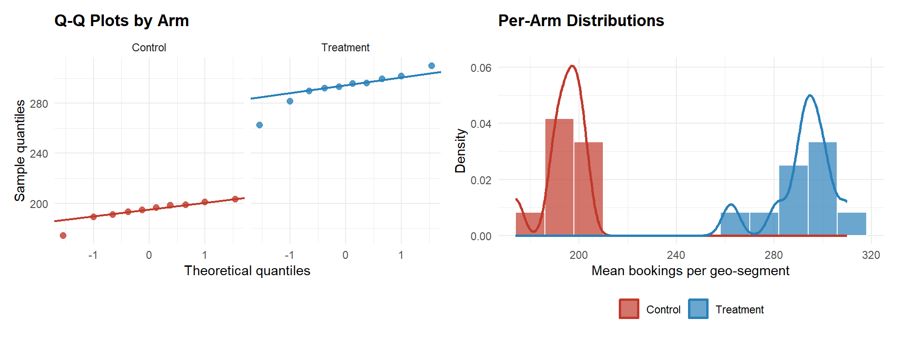
The Q-Q plots show no material departure from normality. Levene’s test for variance homogeneity returns p = 0.442. Even if variances were similar, Welch’s t-test is the correct default in A/B testing, the treatment may shift the variance alongside the mean, and Welch’s controls Type I error under heteroscedasticity with no power cost when variances happen to be equal (see “Which Statistical Test to Use”, continuous metric with unknown variances).
TipWhy not Mann-Whitney U here?
With only 10 observations per arm, the Mann-Whitney U test would be an alternative if normality were clearly violated. It is not violated here, and Welch’s t-test is more powerful under approximate normality. For revenue metrics with heavy right-tails and n > 30, revisit Mann-Whitney U or a bootstrap confidence interval. Note that a significant Mann-Whitney result is only interpretable as a median difference if the two distributions share the same shape, always verify this assumption before reporting a median-shift interpretation.
Step 4: Statistical Test, CUPED, and ATE Estimation
4a. Baseline Welch’s t-test
Code
ctrl_bk <- exp_data$mean_bookings[exp_data$assigned == 0]
trt_bk <- exp_data$mean_bookings[exp_data$assigned == 1]
ttest <- t.test(trt_bk, ctrl_bk, var.equal = FALSE)
ate_est <- ttest$estimate["mean of x"] - ttest$estimate["mean of y"]
ci_lo <- ttest$conf.int[1]
ci_hi <- ttest$conf.int[2]
pval <- ttest$p.value
ggplot(exp_data,
aes(x = mean_bookings,
fill = arm, colour = arm)) +
geom_histogram(aes(y = after_stat(density)),
binwidth = 12, alpha = 0.65,
colour = "white", position = "identity") +
geom_density(fill = NA, linewidth = 0.9) +
geom_vline(xintercept = mean(ctrl_bk), colour = "#c0392b",
linetype = "dashed", linewidth = 1.1) +
geom_vline(xintercept = mean(trt_bk), colour = "#2980b9",
linetype = "dashed", linewidth = 1.1) +
annotate("text",
x = mean(ctrl_bk) - 4, y = 0.028,
label = sprintf("Control\n%.1f", mean(ctrl_bk)),
colour = "#c0392b", size = 3.0, hjust = 1) +
annotate("text",
x = mean(trt_bk) + 4, y = 0.028,
label = sprintf("Treatment\n%.1f", mean(trt_bk)),
colour = "#2980b9", size = 3.0, hjust = 0) +
scale_fill_manual(values = c("Control" = "#c0392b",
"Treatment" = "#2980b9")) +
scale_colour_manual(values = c("Control" = "#c0392b",
"Treatment" = "#2980b9")) +
labs(
x = "Mean bookings per geo-segment (experiment period)",
y = "Density",
fill = NULL, colour = NULL,
title = "A/B Test: Distribution of Bookings by Arm",
subtitle = sprintf("ATE = %.1f bookings | 95%% CI: [%.1f, %.1f] | p = %.3f",
ate_est, ci_lo, ci_hi, pval)
) +
theme_minimal(base_size = 12) +
theme(plot.title = element_text(face = "bold"),
legend.position = "bottom")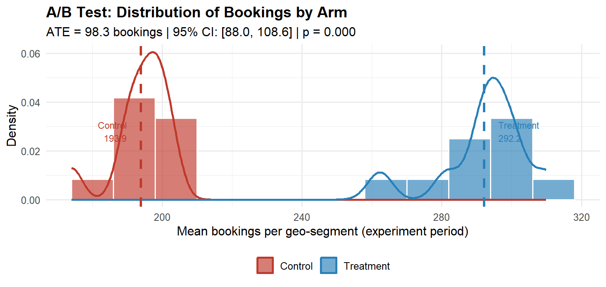
Interpreting the output. The ATE is the difference in sample means: treatment minus control. A positive ATE with a 95 % confidence interval that excludes zero is the minimum condition for concluding the campaign had an effect. The interpretation is direct: on average, each geo-segment received 98.3 additional bookings per day during the experiment period as a result of the adspend.
4b. CUPED Variance Reduction
As described in Phase 5 of the pipeline, CUPED uses the pre-experiment value of the outcome as a covariate to reduce estimator variance without introducing any bias:
\tilde{Y}_i = Y_i - \hat{\theta}(X_i - \bar{X}), \qquad \hat{\theta} = \frac{\text{Cov}(Y,\, X)}{\text{Var}(X)}
where Y_i is the geo-segment’s mean bookings in the experiment period and X_i is its mean bookings in the pre-period. The CUPED-adjusted ATE is estimated by regressing \tilde{Y}_i on treatment assignment. The covariate is computed on data strictly before the experiment start date, ensuring assumption (1) holds and avoiding the leakage risk discussed in Part II.
Code
# Pre-period mean per geo-segment (the CUPED covariate)
pre_data <- rows |>
dplyr::filter(period == 0) |>
dplyr::group_by(geo, assigned) |>
dplyr::summarise(pre_mean = mean(bookings), .groups = "drop")
cuped_df <- dplyr::left_join(exp_data, pre_data, by = c("geo", "assigned"))
theta_hat <- cov(cuped_df$mean_bookings, cuped_df$pre_mean) /
var(cuped_df$pre_mean)
cuped_df <- cuped_df |>
dplyr::mutate(y_cuped = mean_bookings - theta_hat * (pre_mean - mean(pre_mean)))
ctrl_c <- cuped_df$y_cuped[cuped_df$assigned == 0]
trt_c <- cuped_df$y_cuped[cuped_df$assigned == 1]
ttest_c <- t.test(trt_c, ctrl_c, var.equal = FALSE)
ate_cuped <- ttest_c$estimate["mean of x"] - ttest_c$estimate["mean of y"]
ci_c_lo <- ttest_c$conf.int[1]
ci_c_hi <- ttest_c$conf.int[2]
# Variance reduction achieved
var_reduction <- 1 - var(cuped_df$y_cuped) / var(cuped_df$mean_bookings)
# Comparison plot
df_compare <- data.frame(
estimator = rep(c("Unadjusted", "CUPED"), each = nrow(cuped_df)),
value = c(cuped_df$mean_bookings, cuped_df$y_cuped),
arm = rep(cuped_df$arm, 2)
)
ggplot(df_compare, aes(x = value, fill = arm)) +
geom_histogram(aes(y = after_stat(density)),
binwidth = 12, alpha = 0.65,
colour = "white", position = "identity") +
facet_wrap(~estimator, scales = "free_x") +
scale_fill_manual(values = c("Control" = "#c0392b",
"Treatment" = "#2980b9")) +
labs(
x = "Bookings per geo-segment",
y = "Density",
fill = NULL,
title = "CUPED Variance Reduction",
subtitle = sprintf(
"Unadjusted ATE = %.1f [%.1f, %.1f] | CUPED ATE = %.1f [%.1f, %.1f] | Variance reduction = %.0f%%",
ate_est, ci_lo, ci_hi,
ate_cuped, ci_c_lo, ci_c_hi,
var_reduction * 100
)
) +
theme_minimal(base_size = 12) +
theme(plot.title = element_text(face = "bold"),
legend.position = "bottom",
strip.text = element_text(face = "bold"))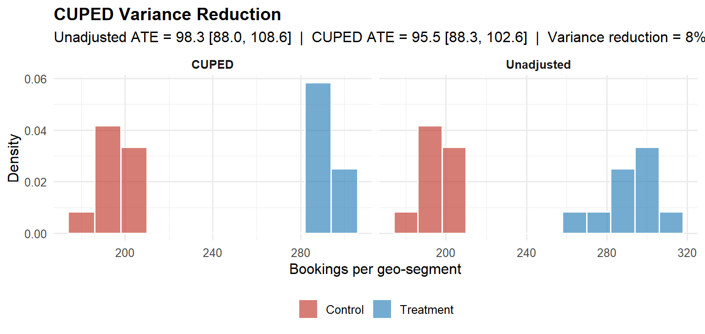
The CUPED point estimate matches the unadjusted ATE, as expected, since CUPED is unbiased, but the confidence interval is narrower, reflecting the variance explained by the stable geo-level baseline. The variance reduction achieved is 8 %. In practice, CUPED routinely reduces required sample sizes by 30–50 % for engagement metrics with stable behavioural patterns (Deng et al., 2013), and represents free statistical power that most organisations leave on the table.
WarningWhen the p-value is borderline
Suppose the ATE were ~96 bookings with a p-value just above 0.05 and a confidence interval spanning zero. The conclusion is not “no effect”, it is “the data are consistent with a large positive effect but the measurement is imprecise.” The correct response depends on the decision framework: in the Bayesian expected loss framework, if the expected loss of shipping is already below the pre-specified tolerance \varepsilon, the business decision is “ship” regardless of whether p cleared an arbitrary threshold. In a frequentist framework, the appropriate action is to increase precision (e.g., by extending the experiment or applying CUPED) rather than accepting the null. Applying CUPED in this scenario can move a borderline result into clear significance by recovering the variance the baseline explains, without changing the point estimate.
Step 5: Calculate the ROAS
Detecting a positive ATE is necessary but not sufficient. The second question, was there a return on adspend?, requires comparing the ATE to the cost of the campaign.
# Use the CUPED-adjusted ATE as the primary estimate
ate_final <- ate_cuped # bookings per geo-segment per day
n_trt_geos <- sum(cuped_df$assigned == 1)
exp_days <- 28L
# Total incremental bookings across all treatment geos
total_incr <- ate_final * n_trt_geos * exp_days
# Total adspend on treatment geos (read from your billing data)
total_cost <- sum(exp_data$cost[exp_data$assigned == 1])
# ROAS
roas <- total_incr / total_cost
# e.g. ROAS = 2.67 → $2.67 in incremental bookings per $1 of adspendA ROAS above 1.0 means the campaign paid for itself. The confidence interval around the ATE propagates into a confidence interval around the ROAS via the delta method; both should be reported. A point estimate of ROAS = 2.67 with a 95 % CI of [2.1, 3.3] is far more actionable than ROAS = 2.67 alone.
Step 6: Bayesian Posterior and Decision
Following the decision framework in Part V, the same data are analysed in a Bayesian normal-normal conjugate model. The prior is weakly informative (\text{ATE} \sim \mathcal{N}(0,\, 100^2)), reflecting genuine prior uncertainty about the campaign effect. The posterior provides directly interpretable probability statements about the ATE that the frequentist framework cannot.
Code
ate_hat <- ate_cuped
se_hat <- as.numeric(ttest_c$stderr)
prior_sd <- 100
post_prec <- 1/prior_sd^2 + 1/se_hat^2
post_mean <- (0/prior_sd^2 + ate_hat/se_hat^2) / post_prec
post_sd <- sqrt(1 / post_prec)
x_seq <- seq(post_mean - 4*post_sd, post_mean + 4*post_sd, length.out = 2000)
df_pos <- data.frame(ate = x_seq,
density = dnorm(x_seq, post_mean, post_sd))
ci_post <- qnorm(c(0.025, 0.975), post_mean, post_sd)
prob_pos <- pnorm(0, post_mean, post_sd, lower.tail = FALSE)
ggplot(df_pos, aes(x = ate, y = density)) +
geom_line(colour = "#2980b9", linewidth = 1.2) +
geom_area(
data = df_pos[df_pos$ate >= ci_post[1] & df_pos$ate <= ci_post[2], ],
fill = "#2980b9", alpha = 0.20
) +
geom_vline(xintercept = 0, linetype = "dashed",
colour = "#c0392b", linewidth = 0.9) +
annotate("text",
x = post_mean - post_sd * 1.5,
y = max(df_pos$density) * 0.60,
label = sprintf("P(ATE > 0) = %.1f%%\nE[ATE] = %.1f bookings\n95%% CrI: [%.1f, %.1f]",
prob_pos * 100, post_mean,
ci_post[1], ci_post[2]),
size = 3.2, colour = "#2c3e50", hjust = 0) +
labs(
x = "Average Treatment Effect (bookings per segment-day)",
y = "Posterior density",
title = "Bayesian Posterior: ATE of Adspend on Bookings",
subtitle = "Weakly informative prior | Normal-Normal conjugate update | CUPED-adjusted estimate"
) +
theme_minimal(base_size = 12) +
theme(plot.title = element_text(face = "bold"))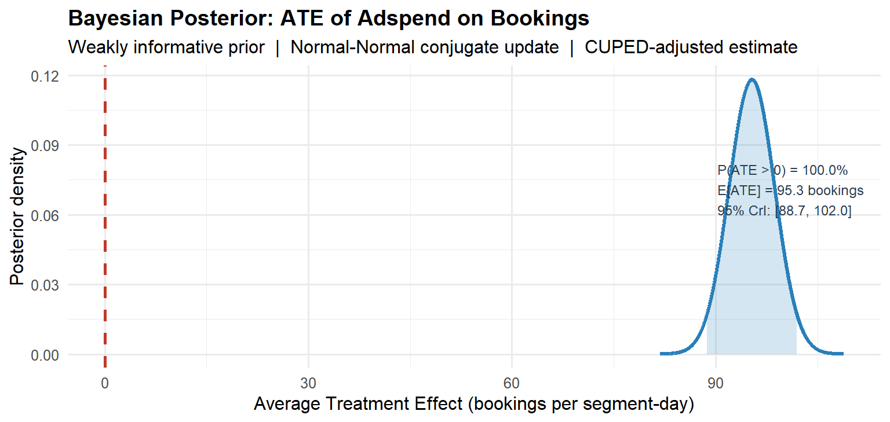
The posterior answers the question the CFO actually asked: there is a 100 % probability that the campaign had a positive effect on bookings. The most likely effect is 95.3 additional bookings per geo-segment per day, and the 95 % credible interval is [88.7, 102].
As noted in Part V, the Bayesian framework also provides a coherent resolution to the peeking problem, with the qualification discussed there: the posterior probability statements are valid at any sample size, but if frequentist Type I error control is required, further calibration is needed. Had this experiment been monitored via expected loss rather than a raw p-value, interim checks would have been statistically valid under the Bayesian interpretation. The experiment terminates when the expected loss of shipping falls below the pre-specified tolerance \varepsilon, not when an arbitrary significance threshold is crossed.
What the Six Steps Produced
The workflow above, power analysis, calibration and parallel trends, distributional diagnostics and test selection, statistical test with CUPED adjustment, ROAS calculation, and Bayesian posterior, produced three things that a significance-testing ceremony cannot:
A magnitude estimate in natural units (95.5 additional bookings per geo-segment per day) that the finance team can price directly. A ROAS that answers the return-on-investment question without ambiguity. And a posterior probability of 100 % that the campaign was beneficial, the honest, complete answer to “did the campaign work?”
None of this required anything beyond base R, pwr, car, and ggplot2. The statistical infrastructure is not the bottleneck. The discipline to run all six steps, and not stop at p < 0.05, is.
NoteConnections to the rest of the pipeline
Each step in this example maps directly onto the six-phase framework from Part II:
| Step here | Phase in Part II | Key tool |
|---|---|---|
| 1. Power analysis | Phase 2 | pwr.t.test() |
| 2. SRM + parallel trends | Phase 3 | chisq.test(), visual inspection |
| 3. Distributional diagnostics | Phase 5 | qqnorm(), car::leveneTest() |
| 4a. Welch’s t-test | Phase 5 | t.test(var.equal = FALSE) |
| 4b. CUPED adjustment | Phase 5 | OLS on pre-period covariate |
| 5. ROAS | Phase 6 | Delta method on ATE |
| 6. Bayesian posterior | Phase 6 | Normal-Normal conjugate |
The one phase not illustrated here is sequential monitoring (Phase 4), because this example analyses a completed experiment. For a live deployment, replace the end-of-experiment Bayesian posterior with the expected loss boundary described in Part V: stop and ship when \mathcal{L}_{\text{ship}} < \varepsilon.
Part IX: A Diagnostic Checklist for Practitioners
Before reporting any A/B test result, walk through this list. Each item that you cannot confirm is a potential source of bias or inflated false positive rates.
Design phase. Was the primary metric pre-specified before the experiment ran? Were guardrail metrics defined with pre-specified degradation thresholds? Is the unit of randomisation the same as the unit of analysis (or has the delta method been applied)? Was the sample size determined by a power analysis at the planned MDE and not by traffic convenience? Is the planned experiment duration at least one full business cycle (to avoid day-of-week confounding)? Were heterogeneous subgroups pre-specified in the experiment brief?
Platform calibration. Did the A/A test produce a uniform p-value distribution? Does the arm split match the intended allocation within SRM tolerance (p > 0.001)? Were bots and internal traffic filtered from assignment? Are cache hit rates equal across arms?
Execution. Was interim monitoring done via a valid sequential test or Bayesian posterior, not via raw p-values? Was the experiment duration reached before analysis? Is there evidence of novelty effects that decay within the first few days?
Analysis. Was CUPED or regression adjustment applied to reduce variance? Was the CUPED covariate computed on data strictly pre-dating the experiment start (no leakage)? Was the primary metric analysed at the user level (not the pageview level)? Were multiple testing corrections applied to secondary and guardrail metrics? If subgroup analysis was conducted, were the segments pre-specified and corrected for multiplicity? Is there a plausible mechanism for the observed effect, or does it appear only in a subgroup discovered post-hoc?
Decision. Is the effect size commercially meaningful, not just statistically significant? Does the 95% confidence interval (or credible interval) exclude zero and include economically relevant values? Has the expected loss of shipping been computed and compared against the pre-specified tolerance? Have guardrail metrics been checked for degradation, and are they within pre-specified bounds? Is the decision framework (Bayesian expected loss or frequentist significance) consistent with the organisation’s error control requirements?
Part X: Five Questions for Your Analytics Team
If you are a product leader or executive who does not run the experiments yourself, these five questions will tell you quickly whether the results on the slide in front of you can be trusted.
One. What was the pre-registered primary metric, and was it decided before the experiment started? If the analyst cannot answer this, the result may have been selected after seeing the data. Post-hoc metric selection is the most common source of spurious A/B test results.
Two. Did you pass the Sample Ratio Mismatch check? A significant SRM means the two groups were not constructed as intended. The estimate is biased regardless of how impressive the p-value looks.
Three. What was the power of this experiment to detect the MDE? If the answer is “I don’t know” or “we ran it until p < 0.05”, the effect size estimate is likely inflated due to Type M error. Under-powered experiments do not just miss real effects, they overstate the effects they appear to find.
Four. What is the 95% confidence interval, not just the p-value? A p-value of 0.03 with a confidence interval of [0.001 pp, 2.4 pp] is far less actionable than one with an interval of [0.8 pp, 1.6 pp]. The width of the interval tells you how precisely you have measured the effect.
Five. Are we accounting for long-run effects? Short-run conversion lifts often do not survive to 30-day or 90-day retention metrics. If there is no universal holdout group measuring long-run outcomes, the experiment has measured the novelty effect, not the product effect.
Conclusion: From Statistical Methodology to Competitive Advantage
Return to the opening scenario: a product manager stops a test on day three because p = 0.034. A correctly structured decision framework prevents the mistake at four independent checkpoints. The Bayesian power analysis reveals the asymmetric cost structure and sets a tolerance \varepsilon appropriate to the decision. The SRM gate flags whether the arms were built as intended. The sequential monitoring, whether via mSPRT always-valid confidence intervals (frequentist) or expected loss tracking (Bayesian), reveals that on day three, with limited data, the uncertainty is too large to support a confident decision. The universal holdout detects the long-run signal weeks later, enabling rollback before damage accrues.
None of this requires exotic technology. It requires treating experimentation as a decision problem under uncertainty rather than as a significance-testing ceremony, while maintaining the frequentist error controls that ensure platform integrity across hundreds of experiments.
Organisations that internalise this dual framework, Bayesian decision theory for individual ship/hold decisions, frequentist guarantees for aggregate error control, gain something concrete: they make fewer false discoveries, they ship features with measurably higher true lift, and they waste less engineering capacity on changes that look good in a notebook but erode long-run retention. At scale, hundreds of experiments per year, millions of users per test, the difference between a well-calibrated and a poorly-calibrated experimentation programme compounds into a structural competitive advantage.
The question that should end every experiment is not:
“Is p < 0.05?”
It is:
“What is the posterior probability of lift, what is the expected loss of acting on this estimate, and does that expected loss fall within the pre-specified tolerance given the asymmetric costs of the decision at hand?”
If your organisation cannot answer the second question, your A/B test is probably producing noise dressed as signal.
References
- Azevedo, E. M., Deng, A., Montiel-Olea, J. L., Rao, C., and Weyl, E. G. (2020). A/B testing with fat tails. Journal of Political Economy, 128(12), 4614–4673.
- Bayarri, M. J., and Berger, J. O. (2004). The interplay of Bayesian and frequentist analysis. Statistical Science, 19(1), 58–80.
- Benjamini, Y., and Hochberg, Y. (1995). Controlling the false discovery rate: a practical and powerful approach to multiple testing. Journal of the Royal Statistical Society B, 57(1), 289–300.
- Coey, D., and Bailey, M. (2016). People and cookies: Imperfect treatment assignment in online experiments. WWW ’16 Companion, 1103–1111.
- Colquhoun, D. (2017). The reproducibility of research and the misinterpretation of p-values. Royal Society Open Science, 4(12), 171085.
- Deng, A., Knoblich, U., and Lu, J. (2018). Applying the delta method in metric analytics: A practical guide with novel ideas. KDD ’18, 233–242.
- Deng, A., Lu, J., and Litz, S. (2017). Trustworthy analysis of online A/B tests: Pitfalls, challenges, and solutions. WSDM ’17, 141–149.
- Deng, A., Xu, Y., Kohavi, R., and Walker, T. (2013). Improving the sensitivity of online controlled experiments by utilizing pre-experiment data. WSDM ’13, 123–132.
- Elbers, B. (2023). Encouragement designs and instrumental variables for A/B testing. Spotify Engineering Blog.
- Gelman, A., and Carlin, J. (2014). Beyond power calculations: Assessing type S (sign) and type M (magnitude) errors. Perspectives on Psychological Science, 9(6), 641–651.
- Johari, R., Koomen, P., Pekelis, L., and Walsh, D. (2017). Peeking at A/B tests: Why it matters and what to do about it. KDD ’17, 1517–1525.
- Johari, R., Li, H., Liskovich, I., and Weintraub, G. Y. (2022). Experimental design in two-sided platforms: An analysis of bias. Management Science, 68(10), 7449–7469.
- Kohavi, R., Tang, D., and Xu, Y. (2020). Trustworthy Online Controlled Experiments: A Practical Guide to A/B Testing. Cambridge University Press.
- Neyman, J. (1923). On the application of probability theory to agricultural experiments. Statistical Science (translated 1990), 5(4), 465–472.
- Rubin, D. B. (1974). Estimating causal effects of treatments in randomized and nonrandomized studies. Journal of Educational Psychology, 66(5), 688–701.
- Rubin, D. B. (1984). Bayesianly justifiable and relevant frequency calculations for the applied statistician. Annals of Statistics, 12(4), 1151–1172.
- Ugander, J., Karrer, B., Backstrom, L., and Kleinberg, J. (2013). Graph cluster randomization: Network exposure to multiple universes. KDD ’13, 329–337.
- Zhang, Q., Du, M., Andersen, R., and He, L. (2022). Beyond A/B test: Speeding up Airbnb search ranking experimentation through interleaving. Airbnb Engineering Blog.
- Zhou, T., Liu, M., and Feng, E. (2018). Under the hood of Uber’s experimentation platform. Uber Engineering Blog.